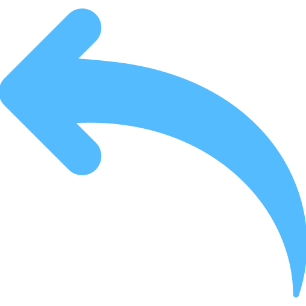
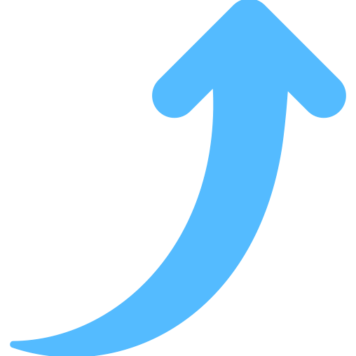

My fascination with technology began in high school when I built my first website. That experience sparked a deep interest in how software works and led me to pursue a degree in Computer Science. Along the way, I’ve participated in hackathons and coding competitions that have helped me grow both technically and personally.
 My Journey 📍
My Journey 📍
Achievements & Interests 🏅
I have been actively involved in coding competitions and hackathons, which have not only sharpened my technical skills but also taught me the value of collaboration and perseverance.
Beyond my academic pursuits, I have taken on several personal projects that allowed me to experiment with new technologies. I enjoy learning about the latest trends in web development and software design, and I often spend my free time reading tech blogs or exploring innovative ideas.
Goals & Aspirations 🎯

My goal is to secure an internship or entry-level position where I can apply my academic knowledge to real-world projects. I am eager to contribute to a team environment and learn from experienced professionals, ultimately growing into a well-rounded software developer.i aspire to work in an environment that challenges me and helps me evolve as a technology professional. Whether it's through an internship or a full-time role, I am excited to bring my passion for coding and problem-solving to a dynamic team, where I can make meaningful contributions.
When I’m not coding, you can find me exploring new technologies, playing chess, or enjoying outdoor activities that help me maintain a balanced lifestyle. These interests not only keep me grounded but also fuel my creativity and drive."
"Outside the world of computers, I enjoy reading about tech innovations, engaging in creative hobbies, and spending time in nature. These activities inspire me to think differently and approach challenges with a fresh perspective.
Hobbies & Interests 🎨
Education 🎓
- studied schooling from Jesus Mary School ,Bijni
- studied Higher Secondary from Sai Vikash Junior College, Lokhra Guwahati
- pursuing B.tech in C.S.E from jec , jorhat
- done summer internships in iiit guwahati on graph theory
- currently freelanching in fiverr in website development